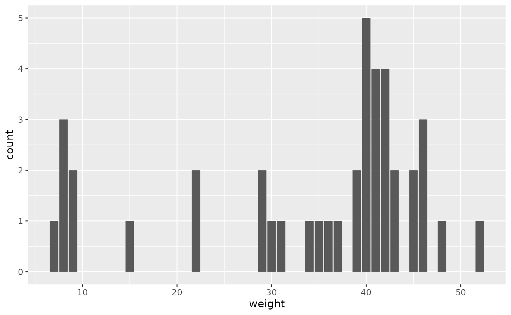
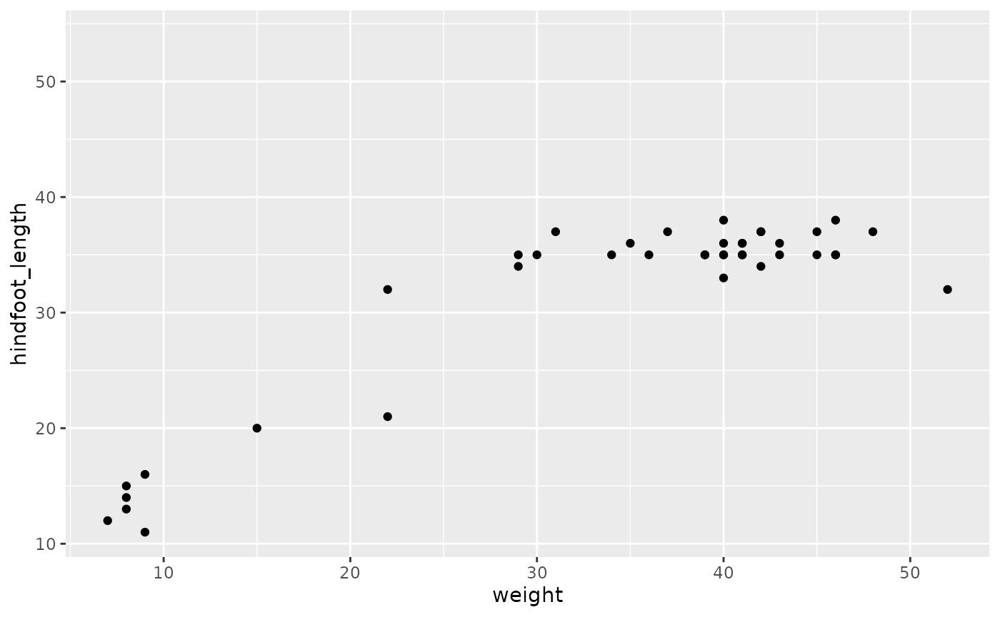

SurveysTutorial.RmdThis R package will analyze surveys data. This package contains functions that will allow users to clean a particular data set, generate various different graphs with data of their choosing, add new columns of data, and determine relationships between two or more selected variables.
To install final.pkg, copy and paste the following code into your console.
devtools::install_github("alexisb408/final.pkg")## Using github PAT from envvar GITHUB_PAT## Downloading GitHub repo alexisb408/final.pkg@HEAD##
## ── R CMD build ─────────────────────────────────────────────────────────────────
## * checking for file ‘/tmp/RtmpooR9Bh/remotesfd03e796b4b/alexisb408-final.pkg-e22c59a/DESCRIPTION’ ... OK
## * preparing ‘final.pkg’:
## * checking DESCRIPTION meta-information ... OK
## * checking for LF line-endings in source and make files and shell scripts
## * checking for empty or unneeded directories
## Removed empty directory ‘final.pkg/broussard.pkg’
## * building ‘final.pkg_0.1.tar.gz’
## Warning: invalid uid value replaced by that for user 'nobody'## Installing package into '/tmp/RtmpajmRUB/temp_libpathe055fe5fb4b'
## (as 'lib' is unspecified)First, click on the “Upload files to server” button located in the “Files” tab of the R window. Select the .csv file containing the surveys data. To make this data usable in R, copy and paste the following codes into your console individually.
#install.packages("googlesheets4")
library(googlesheets4)
googlesheets4::gs4_deauth()
surveys <- read_sheet("https://docs.google.com/spreadsheets/d/1PXMHBXOe_L0GZV_qeJWMZEXgxMWJ_BdxIHlTBKYhzMc/edit?usp=sharing")## ✔ Reading from surveys.## ✔ Range surveys.There are a total of five functions in this R package. In this section, you will learn both the purpose of each function as well as how to use each function.
This first function cleans a selected column from a particular data set of your choosing by removing any unwanted values, specifically NA values. These unwanted values can interfere with any calculations or plots you may generate using your data set, so it is best to remove these values before moving forward.
The name of this function is remove_nas_p3(). To utilize this function, copy and paste the following code into your console.
remove_nas_p3 <- function(data, column){
clean <- data %>%
na.omit(data) %>%
select(all_of(column))
return(clean)
} After you have done this, type the function title into your console followed by the data set of your choosing and a column from the data set in quotation marks. An example is shown below.
library(final.pkg)##
## Attaching package: 'final.pkg'## The following object is masked _by_ '.GlobalEnv':
##
## remove_nas_p3## ── Attaching core tidyverse packages ──────────────────────── tidyverse 2.0.0 ──
## ✔ dplyr 1.1.4 ✔ readr 2.1.4
## ✔ forcats 1.0.0 ✔ stringr 1.5.1
## ✔ ggplot2 3.4.4 ✔ tibble 3.2.1
## ✔ lubridate 1.9.3 ✔ tidyr 1.3.0
## ✔ purrr 1.0.2## ── Conflicts ────────────────────────────────────────── tidyverse_conflicts() ──
## ✖ dplyr::filter() masks stats::filter()
## ✖ dplyr::lag() masks stats::lag()
## ℹ Use the conflicted package (<http://conflicted.r-lib.org/>) to force all conflicts to become errors
remove_nas_p3(surveys, "weight")## # A tibble: 40 × 1
## weight
## <dbl>
## 1 40
## 2 48
## 3 29
## 4 46
## 5 36
## 6 52
## 7 8
## 8 22
## 9 35
## 10 7
## # ℹ 30 more rowsIf the function worked properly, a column consisting of no NA values should have been returned.
The second function multiplies a selected column from a data set of your choosing by two and generates a new column containing these new variables. This gives users the ability to generate different results with their data, including calculations, plots, etc., that could not have been done before.
The name of this function is multiply_variable(). To utilize this function, copy and paste the following code into your console.
multiply_variable <- function(df, variable) {
column <- df %>%
na.omit() %>%
select({{variable}})
if(sum(column) > 0) {
new <- df %>%
na.omit() %>%
mutate(new_column = 2 * {{variable}})
return(new)
} else {
print("STOP")
}
}After you have done this, type the function title into your console followed by the data set of your choosing and a column from the data set. An example is shown below.
multiply_variable(surveys, hindfoot_length)## # A tibble: 40 × 10
## record_id month day year plot_id species_id sex hindfoot_length weight
## <dbl> <dbl> <dbl> <dbl> <dbl> <chr> <chr> <dbl> <dbl>
## 1 63 8 19 1977 3 DM M 35 40
## 2 64 8 19 1977 7 DM M 37 48
## 3 65 8 19 1977 4 DM F 34 29
## 4 66 8 19 1977 4 DM F 35 46
## 5 67 8 19 1977 7 DM M 35 36
## 6 68 8 19 1977 8 DO F 32 52
## 7 69 8 19 1977 2 PF M 15 8
## 8 70 8 19 1977 3 OX F 21 22
## 9 71 8 19 1977 7 DM F 36 35
## 10 74 8 19 1977 8 PF M 12 7
## # ℹ 30 more rows
## # ℹ 1 more variable: new_column <dbl>If the function worked properly, a chart consisting of your selected data set should have appeared with the new column containing the multiplied variables at the end.
This third function will generate a bar graph consisting of a selected column from a data set of your choosing. It may be beneficial for you to construct a graph of your data in order to better visualize trends and consistencies that may be difficult to determine by just looking at the values.
The name of this function is bar_graph(). To utilize this function, copy and paste the following code into your console.
bar_graph <- function(df, independent) {
column_1 <- df %>%
na.omit() %>%
select({{independent}})
if(sum(column_1) > 0) {
print(df)
bg <- ggplot(df, mapping = aes(x = {{independent}})) + geom_bar()
return(bg)
} else {
print("STOP!!")
}
}After you have done this, type the function title into your console followed by the data set of your choosing and a column from the data set. An example is shown below.
bar_graph(surveys, independent = weight)## # A tibble: 151 × 9
## record_id month day year plot_id species_id sex hindfoot_length weight
## <dbl> <dbl> <dbl> <dbl> <dbl> <chr> <chr> <dbl> <dbl>
## 1 1 7 16 1977 2 NL M 32 NA
## 2 2 7 16 1977 3 NL M 33 NA
## 3 3 7 16 1977 2 DM F 37 NA
## 4 4 7 16 1977 7 DM M 36 NA
## 5 5 7 16 1977 3 DM M 35 NA
## 6 6 7 16 1977 1 PF M 14 NA
## 7 7 7 16 1977 2 PE F NA NA
## 8 8 7 16 1977 1 DM M 37 NA
## 9 9 7 16 1977 1 DM F 34 NA
## 10 10 7 16 1977 6 PF F 20 NA
## # ℹ 141 more rows## Warning: Removed 110 rows containing non-finite values (`stat_count()`).
If the function worked properly, a bar graph displaying the values from the selected data of your choosing should have appeared in a window on the right side of your screen.
This fourth function will generate a point graph displaying two selected columns of data from a data set of your choosing. It may be beneficial for you to construct a graph plotting two variables against each other. By doing so, you may be able to better visualize trends in your data as well as see how well one variable influences another.
The name of this function is point_graph(). To utilize this function, copy and paste the following code into your console.
point_graph <- function(df, independent, dependent) {
column <- df %>%
na.omit() %>%
select({{independent}})
if(sum(column) > 0) {
print(df)
pg <- ggplot(df, mapping = aes(x = {{independent}}, y = {{dependent}})) + geom_point()
return(pg)
} else {
print("STOP!!")
}
}After you have done this, type the function title into your console followed by the data set of your choosing and two columns from the data set. Make sure to define which variable is independent and which variable is dependent. An example is shown below.
point_graph(surveys, independent = weight, dependent = hindfoot_length)## # A tibble: 151 × 9
## record_id month day year plot_id species_id sex hindfoot_length weight
## <dbl> <dbl> <dbl> <dbl> <dbl> <chr> <chr> <dbl> <dbl>
## 1 1 7 16 1977 2 NL M 32 NA
## 2 2 7 16 1977 3 NL M 33 NA
## 3 3 7 16 1977 2 DM F 37 NA
## 4 4 7 16 1977 7 DM M 36 NA
## 5 5 7 16 1977 3 DM M 35 NA
## 6 6 7 16 1977 1 PF M 14 NA
## 7 7 7 16 1977 2 PE F NA NA
## 8 8 7 16 1977 1 DM M 37 NA
## 9 9 7 16 1977 1 DM F 34 NA
## 10 10 7 16 1977 6 PF F 20 NA
## # ℹ 141 more rows## Warning: Removed 111 rows containing missing values (`geom_point()`).
If the function worked properly, a point graph displaying the variables from the selected data of your choosing should have appeared in a window on the right side of your screen.
The fifth and final function in this package will generate a summary that determines how well an independent variable affects one or more dependent variables. This will allow you to determine how weak or strong the relationship between two or more of your variables is.
The name of this function is lm_function(). To utilize this function, copy and paste the following code into your console.
lm_function <- function(data, independent, dependent) {
clean_data <- data %>%
na.omit()
model <- clean_data %>%
na.omit() %>%
select(a = {{independent}}, {{dependent}}) %>%
lm(a ~ ., data = .) %>%
summary()
if(sum(is.na(clean_data)) == 0){
return(model)
} else {
print("STOP")
}
}After you have done this, type the function title into your console followed by the data set of your choosing and two columns from the data set in quotation marks. Make sure to put the independent variable first and the dependent variable second. An example is shown below.
lm_function(surveys, "weight", "hindfoot_length")##
## Call:
## lm(formula = a ~ ., data = .)
##
## Residuals:
## Min 1Q Median 3Q Max
## -12.6561 -2.9390 0.4174 2.9875 17.3439
##
## Coefficients:
## Estimate Std. Error t value Pr(>|t|)
## (Intercept) -10.4578 3.5257 -2.966 0.00519 **
## hindfoot_length 1.4098 0.1086 12.978 1.54e-15 ***
## ---
## Signif. codes: 0 '***' 0.001 '**' 0.01 '*' 0.05 '.' 0.1 ' ' 1
##
## Residual standard error: 5.704 on 38 degrees of freedom
## Multiple R-squared: 0.8159, Adjusted R-squared: 0.8111
## F-statistic: 168.4 on 1 and 38 DF, p-value: 1.536e-15If the function worked properly, a summary comparing two or more of your selected variables should have appeared.